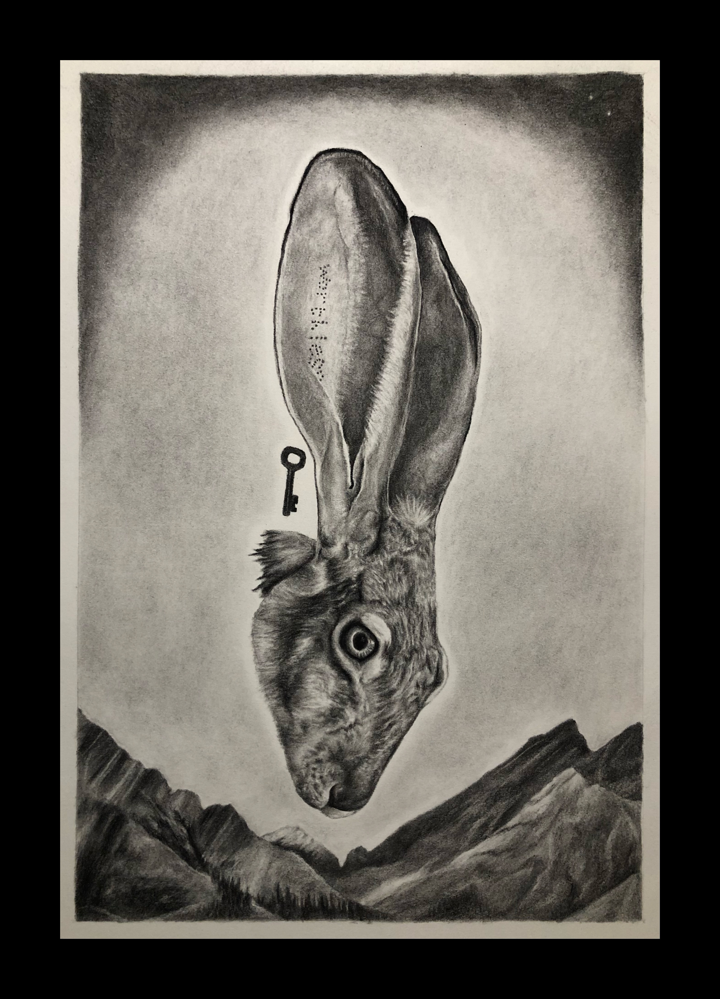
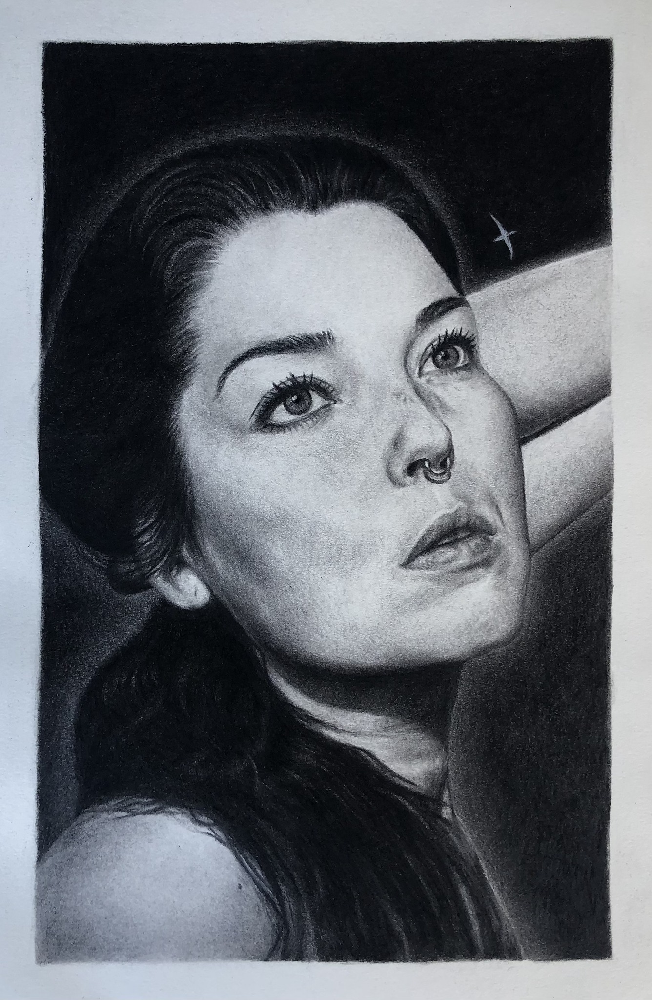
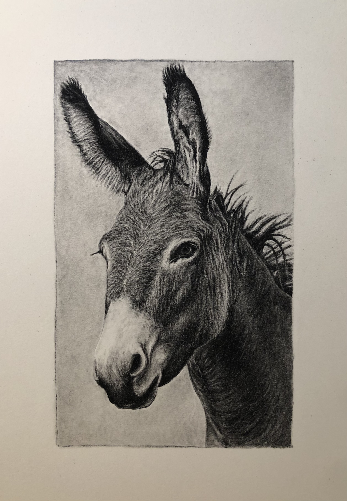
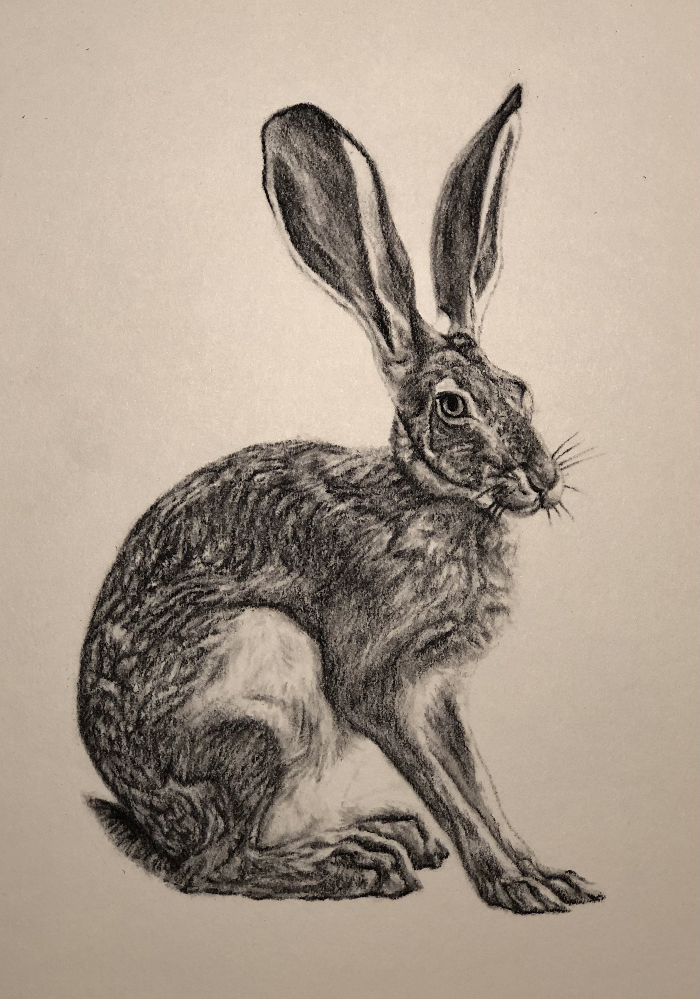
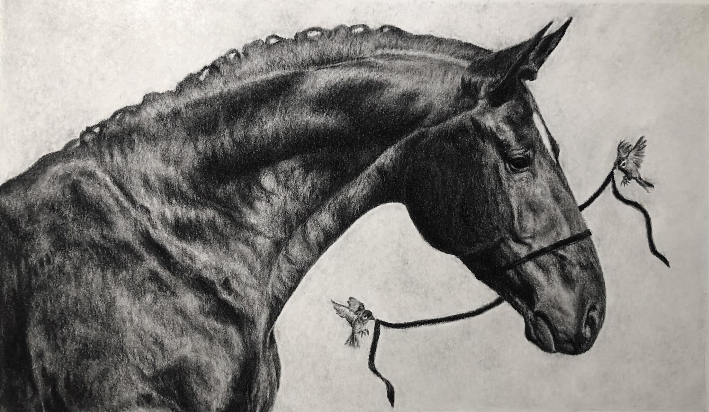
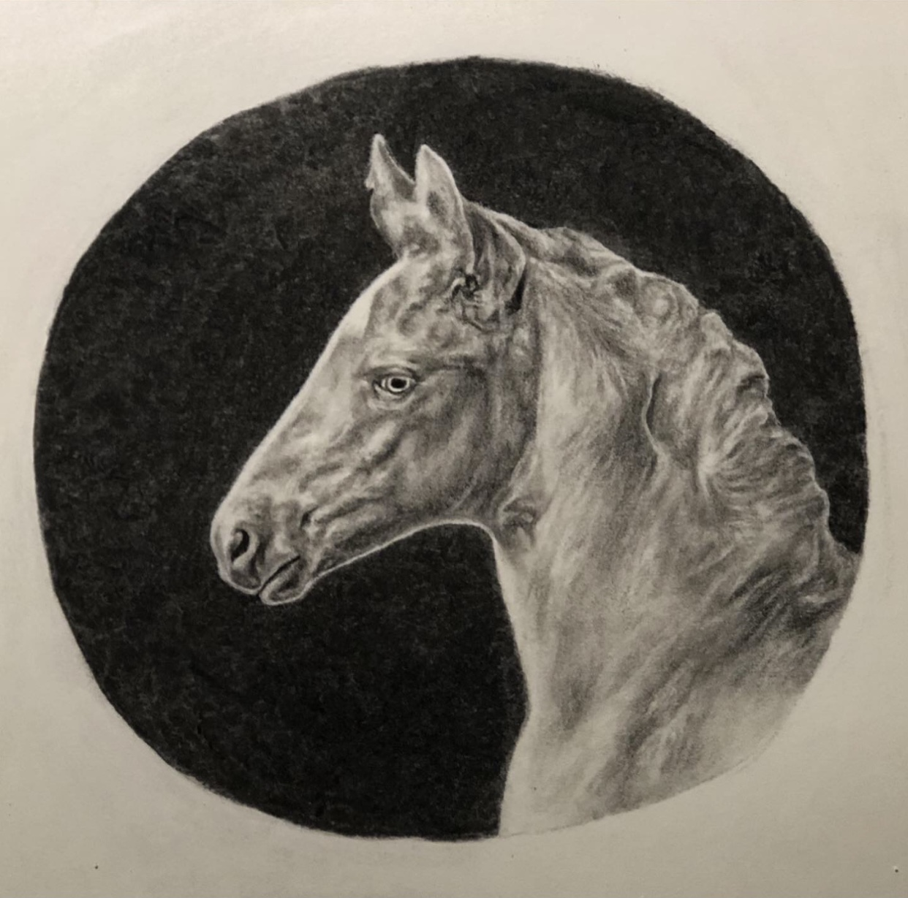
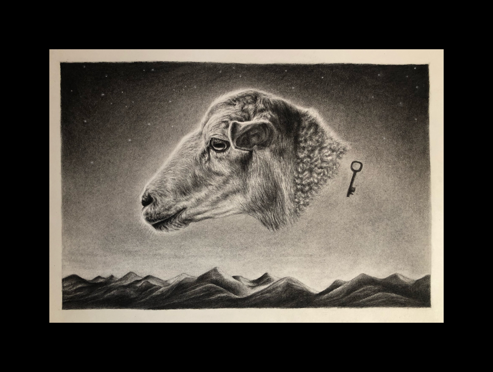

Worthless
Charcoal on paper, 8 x 12 inches, 2023
Worthless, 2023

Albatross
Charcoal on paper, 7 x 11 inches, 2024
Albatross, 2024

As Above, So Below
Charcoal on paper, 18 x 24 inches, 2023
As Above, So Below, 2023

Assumptions
Charcoal on paper, 4.5 x 7 inches, 2022
Assumptions, 2022

Done
Charcoal on paper, 6.5 x 9 inches, 2021
Done, 2021

Imagined Futures
Charcoal on paper, 16 x 9 inches, 2025
Imagined Futures, 2025

A Saint Amid Thieves
Charcoal on paper, 10 x 5.75 inches, 2022
A Saint Amid Thieves, 2022

Schemes
Charcoal on paper, 10 x 10 inches, 2021
Schemes, 2021

Seven
Charcoal on paper, 12 x 8 inches, 2024
Seven, 2024

Something Missing
Charcoal on paper, 4.5 x 8.25 inches, 2021
Something Missing, 2021

An Archer
Charcoal on paper, 8 x 8 inches, 2022
An Archer, 2022

A Wicked Game
Charcoal on paper, 12 x 11 inches, 2022
A Wicked Game, 2022

With Hooves and Horns
Charcoal on paper, 22.25 x 12 inches, 2023
With Hooves and Horns, 2023

A Peacetime Alliance (The War is Overseas)
Charcoal on paper, 12 x 9 inches, 2023
A Peacetime Alliance (The War is Overseas), 2023